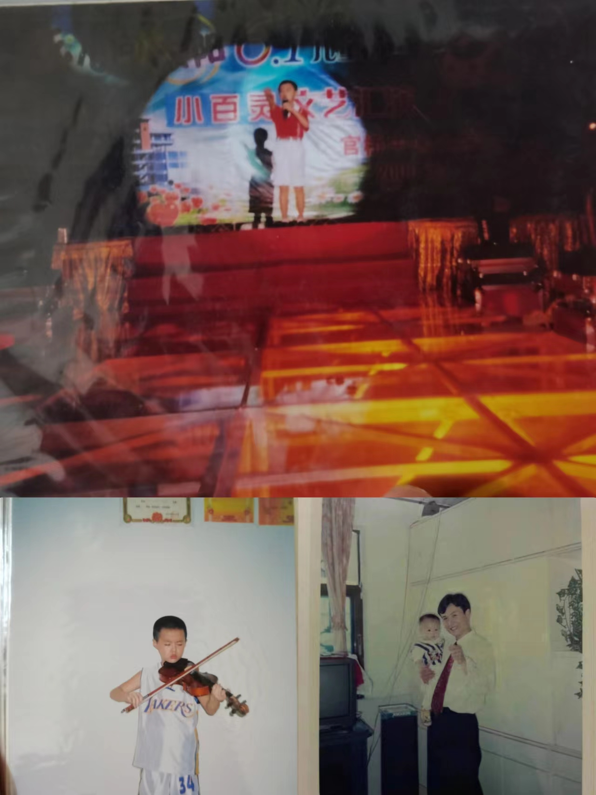
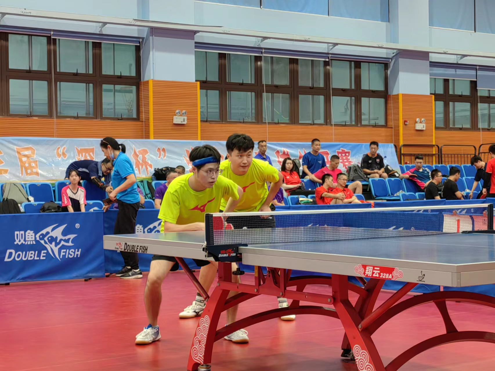

|
 |

|
I was born in Quanzhou, Fujian, in 1997.
I can calm down to learn knowledge and do research. I was rated as a “Three Good” student of the city of Quanzhou in my primary school, a “Three Good” student of Fujian Province in my junior high school, and one of the Top 10 Most Influential Graduates in my university, respectively.
I love life and have many hobbies. My favourite ones are singing (I won second place in the Solo Competition of the city of Nan'an) and table tennis (I won sixth place in Fujian Children's Table Tennis Championship, and I am a national second-class player).
I am optimistic and positive in my life. I get along well with my lab and team partners. I am willing to help them and have good communication with them.
I am self-motivated at work and can quickly find and solve problems.
I dare to bite the bullet in scientific innovation. When I was an undergraduate, I led my team to challenge competitions (Robomaster, ICRA, Marine Vehicle Design and Construction Contest and so on) that no one in my school had ever done, and we made many breakthroughs. The headmaster praised me as a young man with the spirit of Harbin Institute of Technology.
However, I have a perfect obsessive-compulsive disorder and always want to do my best.